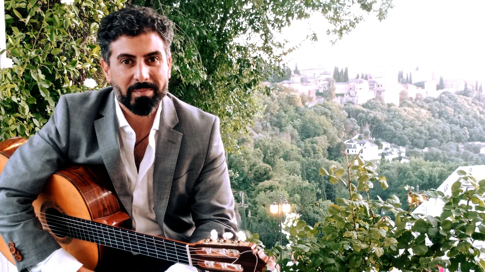
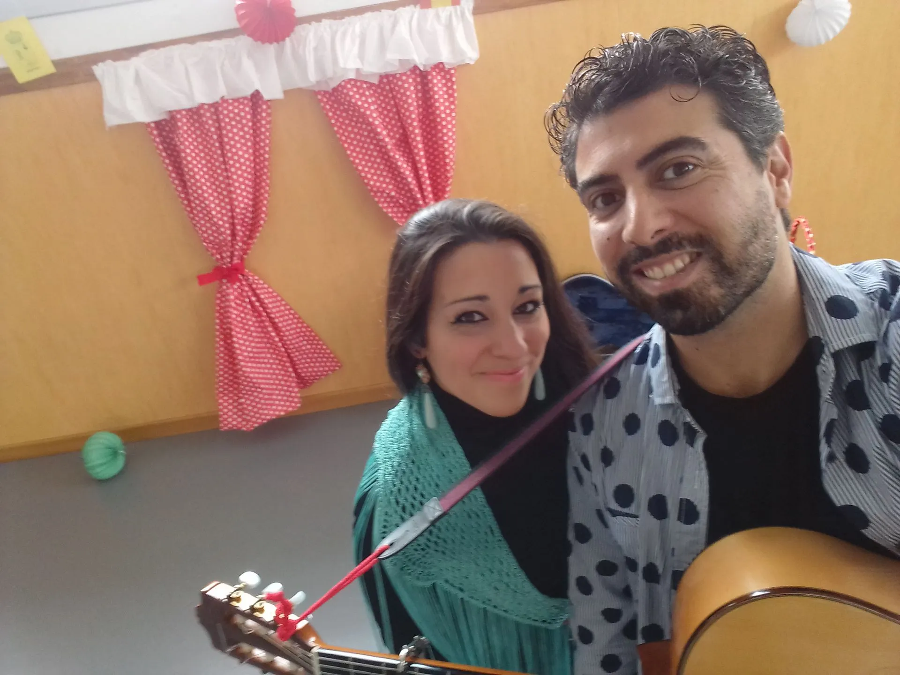
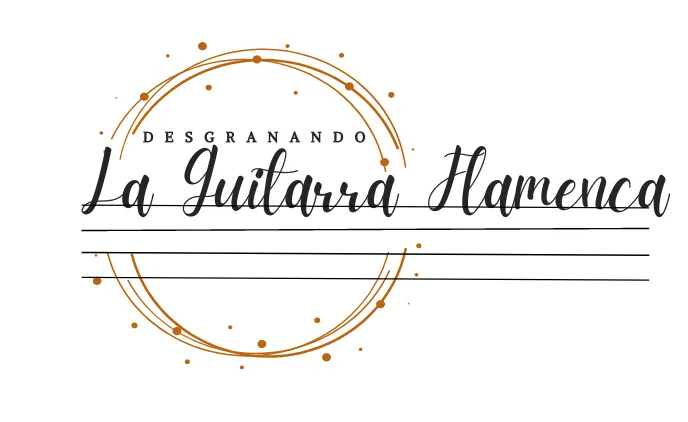

BIENVENIDOS CURSOS Desgranando la guitarra flamenca BLOG FLAMENCUENTOS DIDÁCTICA DEL FLAMENCO Métodos de guitarra flamenca Contacto Galería Galería Aquí te ofrecemos una muestra de lo que hacemos y algunos de los proyectos en los que hemos estado trabajando. Button Button Button Button Button Button Button Button Contacto Llámanos: +34 615 43 86 93 Newsletter Suscríbete Copyright © Todos los derechos reservados. Share by:
Galería visual de referencia





Imágenes externas temporales: falta exportar originales.